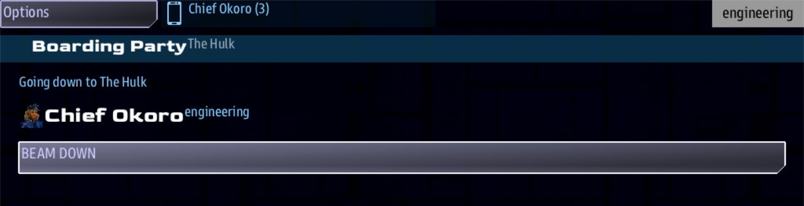

Class 3, Lecture 2 - A party and a place¶
What you will have at the end¶
When the ship pulls alongside the hulk, a boarding party forms. Your crew go aboard as themselves: the people you wrote, at the consoles they sit at. Inside are three rooms. From every room there is a way back, and from the first room there is a way home.

The Boarding Party app on the Engineering console: going down to The Hulk, Chief Okoro's face, name and job, and the BEAM DOWN button.You will write two short sections and one quest in mission.amd, and paste one recipe
card at the end of story.mast.
The video¶
About 6 minutes. Subtitles are available in the player.
Before you start¶
- The mission you made in Lecture 1,
MyBoarding, assbs createmade it. The borrowed scene and its card are gone, andmission.amdis 60 lines long. - You have written a quest (Class 1, Lecture 8) and pasted a recipe card at the end of
story.mast(Class 1, Lecture 11). - A command prompt open in
C:\Cosmos\data\missions, andsbs lint MyBoardingsaysclean.
Words for this lecture:
| Word | Meaning |
|---|---|
| Roster | The list of who sits at which console |
| Room | One record in a scene: what the party finds, and the ways out |
| Choice | One way out of a room. On screen it is a button |
| Visit | One trip aboard, from beaming down to coming home |
| Handheld | What a console turns into while its crew member is aboard |
Step 1 - Your crew¶
Open mission.amd. Go to the very end of the file, leave two blank lines, and add a new
section:
## [The Watch](watch)
---
crew
Ship: Artemis
Names: locked
---
The people aboard for this story.
### [Chief Okoro](okoro)
---
Console: engineering
Face: terran_male
Roles: engineering
---
### [Dr Hale](hale)
---
Console: science
Face: terran_female
Roles: medical
---
This is a crew roster. Each record is the person at one console. Whoever sits at Engineering is Chief Okoro, on the bridge and aboard the hulk. There is one cast, and it is the crew. In the game, the name is at the top of the Engineering console, beside the handheld icon, before anyone has flown anywhere.
| Line | What it means |
|---|---|
crew |
What kind of section this is. A bare word, on the first line of the fence |
Ship: Artemis |
The ship these people crew. Artemis is the first ship in this mission |
Names: locked |
These are your people. A player's own saved name is not used at these consoles |
Console: engineering |
Which seat this person fills |
Face: |
Their portrait |
Roles: engineering |
Their job. Next lecture, it decides which choices they are offered |
Leave out Names: locked and the roster still names the consoles, but a player who has
saved a name of their own keeps it. Lock it when the story needs your cast.
A console the roster does not mention, such as Helm, gets a name from the game.
Save, and run sbs lint MyBoarding. It should say clean.
Step 2 - The place¶
Below the crew section, leave two blank lines and add the rooms:
## [Scenes](boarding)
### [The Airlock](airlock)
% The outer door was never sealed. Frost on the inside of the glass, and a row of suits still on their hooks.
- [Go aft, toward the reactor](reactor)
- [Go forward, to the bridge](bridge)
- [Return to the ship]()
### [The Reactor Room](reactor)
% Cold. The core was shut down by hand, in the right order, by someone who had time.
- [Go back to the airlock](airlock)
### [The Bridge](bridge)
% Every station is dark but one. The log is open on the captain's chair, and the last entry is a single word.
- [Go back to the airlock](airlock)
A room is a record with two parts. It has no fence. On the boarding party's handheld, its
name is in the bar at the top, its % line is under the bar, and each choice is a button.
| Part | How to write it | What it does |
|---|---|---|
| What the party finds | One line starting with % |
Everyone in the party reads it |
| The ways out | Lines starting with - [words](key) |
Each is a choice. The key names the room it leads to |
Keep each % line on one line, however long it gets. If you write two % lines in one
room, the game shows one of them, picked at random each time. You saw that in Lecture 1.
A choice with empty round brackets, (), leads nowhere. Taking it ends the visit.
Save, and run lint. This time it has something to say:
== mission.amd ==
[WARNING] line 86:5: nothing in this mission reads a section keyed `boarding`, so its records are never loaded. The story asks this file for: characters, crew, dialogue, items, landmarks, quests, relics, scans, sides. Change the key in round brackets to one of those, or add the line that reads it (section-not-loaded)
1 amd + 1 mast file(s): 0 error(s), 1 warning(s)
That is true, and it is what Step 4 puts right. Do not change the key. The card in Step 4
finds your rooms by the key boarding.
Step 3 - Two rules for a place¶
Read your rooms again and check them against these.
- A way back from every room. Every room has a choice with a key in its brackets, leading to a room the party has already been in. A room whose choices only lead onward is a trap, and a room with no choices at all holds the party for good.
- A way home where leaving is a decision. The
()choice goes in the room the party arrives in, and later in the rooms where the story ends. It does not go in every room.
The second rule has a reason. One press of Return to the ship, by anyone in the party,
ends the visit for everybody. The place is not offered again. Put that button in every
room and one impatient thumb ends the evening. Put it only in the airlock, and leaving is
a walk back to the door.
Lint checks one of the mistakes you can make here, and not the others. Step 5 has the table.
Step 4 - Start it¶
Two things: a quest that says when, and a card that says what.
In mission.amd, find your Quests section. Below the last line of Study the
Derelict, leave a blank line and add a quest:
### [Close Inspection](approach)
---
Scope: shared
Starts when: at once
Objective: Close to within 500 of the hulk
Done when: reach derelict 500
Then: signal board_hulk
Reward: 100 credits
---
 The Unknown Hulk, as DS 1's sensors see her.
The hulk is not answering hails. Bring the ship in close and take a look.
Inside 500, a boarding party can go across. Whoever goes, goes as themselves, so think about who you send.
You wrote quests like this in Class 1, and you will see this one on Helm, in the
handheld's Quest Log. The line that matters today is Then:. It says
what happens when the quest completes, and this one sends a signal named board_hulk.
The description is a page, as in Class 1, Lecture 8: the Quest Log shows it in full, and
a blank line starts a new paragraph. The first line is a ship lead line, the shape from
Class 1, Lecture 11. tsn_warpster is the hull the template gives the hulk, so the
picture is the ship the crew is flying to. Lint does not read that line, so check the
hull name letter for letter.
In story.mast, go to the very end of the file, leave two blank lines, and paste
this recipe card:
#
# Start the boarding visit. `Then: signal board_hulk` in mission.amd sends this signal
# when the Close Inspection quest completes.
#
//shared/signal/board_hulk
party_ship = next(iter(role("__player__")), None)
->END if party_ship is None
boarding_visit(party_ship, dialogue_scenes(amd_section(MISSION_DOC, "boarding")), "airlock", title="The Hulk")
->END
The line that starts // begins at the left edge. The four lines under it are pushed in
by four spaces. The long line is one line.
You change three things on this card when you reuse it, and nothing else:
| On the card | Change it to |
|---|---|
board_hulk (on the card, and in your quest's Then: line) |
The signal name your quest sends |
"airlock" |
The key of the room the party arrives in |
"The Hulk" |
What the crew should see as the name of the place |
Your crew roster needs no card. The file already reads it.
Step 5 - Check it¶
Every row below was tried on the finished files: one change, lint, then the game.
| Mistake | What the game does | Lint says |
|---|---|---|
A choice whose key is misspelled, such as (brige) |
Taking that choice ends the visit | dangling-choice |
| A room typed with four hashes | The same. The room is lost, and the choice that leads to it ends the visit | scene-nested |
A % line broken onto a second line |
Shows the party one half of the sentence or the other | line-wrapped |
The Scenes key is not boarding |
No party forms. mast.runtime.log in the mission folder says it was given no rooms |
section-not-loaded |
| The card is not pasted | No party forms | section-not-loaded, and signal-no-route on the quest |
The quest sends board_hull and the card waits for board_hulk |
No party forms | signal-no-route |
The word crew left out of the roster's fence |
The consoles get names from the game, and their jobs are their seats | section-not-loaded, and crew-member-level on each person |
| A person typed with four hashes | That seat gets a name from the game | crew-member-level |
| A quote mark lost from the card | Nothing in the mission runs. Lint says so in capitals | mast-compile, an error, under story.mast |
What lint cannot see. Each of these says clean:
| You wrote | What happens |
|---|---|
| A room with no choices at all | The party walks in and cannot move on. The visit never ends |
No () choice anywhere |
The party can walk the rooms and never leave |
No Then: signal board_hulk line on the quest |
The quest completes and no party forms |
"air_lock" on the card, airlock on the room |
No party forms. mast.runtime.log names the room it wanted and the rooms there are |
Ship: Artemus |
Nobody is Chief Okoro. Every console gets a name from the game |
Console: enginering |
The Engineering console gets a name from the game. Dr Hale is still Dr Hale |
For the last two, look at the name on the console before you fly anywhere.
Step 6 - Play it¶
Start the game with a server, a Helm console to fly with, and an Engineering console:
- Look at the top of the Engineering console, beside the handheld icon. The name there is Chief Okoro.
- At Helm, fly to within 500 of the hulk. At the start it is off the map: zoom the map out once, and it is the mark with no name ahead; its name appears within about 4K. Close Inspection completes inside 500.
- On the Engineering console, press the handheld icon. One of its tiles is Boarding Party, and it offers The Hulk.
- Press the tile, then press BEAM DOWN. The console becomes the boarding party's handheld. The bar across the top says who you are, your job, and the room you are in: Chief Okoro, engineering, The Airlock. Under it is the room's line, with each way out as a button.
- Choose a way out. The page keeps what you have read: who chose, the choice, then the next room's line under it. Walk all three rooms.
- Go back to the airlock and take Return to the ship. The visit ends, and the console is back at Engineering without another press.
The Helm console can beam down too. It is not on your roster, so it goes as whoever the
game named it, with the job helm. The party moves together: both consoles show the same
page, and either one's button takes everyone to the next room.
If something goes wrong¶
| What you see | Likely cause |
|---|---|
| The console is not Chief Okoro | The roster's Ship: is not Artemis, the record's Console: is not the seat you took, or the first line of the roster's fence is not the word crew |
| No Boarding Party tile when you reach the hulk | The quest has no Then: signal board_hulk line, or the name on the card does not match it. Run lint |
| The quest completes and no party forms, and lint is clean | The arrival room on the card is not one of your room keys. Open mast.runtime.log in the mission folder |
| Taking a choice ends the visit | Its key is misspelled. Lint warns about this one |
| The party is in a room with no buttons | The room has no choices. Lint does not warn about this one. Close the game and add a way back |
| Close Inspection never completes | Its Done when: line does not say reach derelict 500. derelict is the hulk's role, as in Class 1 |
Lint prints an error under story.mast |
The card lost a character when it was pasted. Delete it and paste it again, whole |
Exercise¶
Add a fourth room of your own, and a third crew member.
- Give the room a name, a key and one
%line. - Add a choice that leads to it from one of the three rooms.
- Give it a way back.
- Add a person for the Helm console to your roster, with a job of your choosing. One word, and you may invent it.
- Run lint, then walk to your room in the game.
- Break it on purpose: delete the way back from your new room. Run lint, and read
clean. Then walk into the room in the game. Close the game and put the line back.
Checkpoint¶
You are done when all four are true:
sbs lint MyBoardingsaysclean.- Each console in your roster shows the name you wrote.
- The Boarding Party forms when Close Inspection completes, and not before.
- You can reach every room, and Return to the ship puts you back at your station.
Next¶
Lecture 3 gives each person their own menu: the engineer is offered one choice, the surgeon another, and what the party learns depends on who went.
Further reading¶
Nothing here is needed for Lecture 3.
- "Boarding parties" in the library documentation: the short way,
boarding_visit. - "Crew rosters" in the library documentation:
Names:,Roles:, and who a console is.
Download this lecture's finished files (a zip of its example folder).